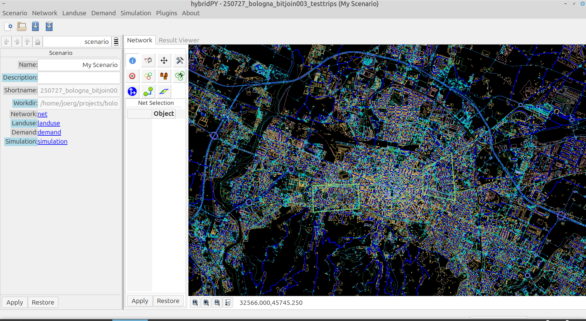

This document describes the capabilities and basic usage of the software hybridPY (formerly known as SUMOPy). hybridPY is intended to expand the user-base of the traffic micro-simulator SUMO by providing a user-friendly, yet flexible simulation suite. The original publication related to SUMOPy can be found at the University of Bologna and in the proceedings of the SUMO2013.
A further scope of hybridPY is to manage the huge amount of data necessary to run complex multi-modal simulations. This includes different demand generation methods such as support for OD matrices, turnflows and a synthetic (or virtual population). Also different services such as Personal Rapid Transit (PRT) or self-driving taxis are supported.
Essentially, hybridPY consists of a GUI interface, network editor as well as a simple to use scripting language which facilitates the use of SUMO.
Introduction#
SUMO rapidly developed into a flexible and powerful open-source micro-simulator for multi-modal urban traffic networks . The features and the number of tools provided are constantly increasing, making simulations ever more realistic. However, the different functionalities consist at the present state of a large number of binaries and scripts that act upon a large number of files, containing information on the network, the vehicles, districts, trips routes, configurations, and many other parameters. Scripts (mostly written in Python), binaries and data files exist in a dispersed manner. In practice, a master script is necessary to hold all processes and data together in order run a simulation of a specific scenario in a controlled way. This approach is extremely flexible, but it can become very time consuming and error prone to find the various tools, combine their input and output and generate the various configuration files. Furthermore, it reduces the user-base of SUMO to those familiar with scripting and command line interfaces. Instead, SUMO has the potential to become a multi-disciplinary simulation platform if it becomes more accessible to disciplines and competences.Scripts (mostly written in Python), binaries and data files exist in a dispersed manner.
This problem has been recognized and different graphical user interfaces have been developed. The traffic modeller (also named traffic generator) is a tool written in Java which helps to manage files, to configure simulations and to evaluate and visualize results.
hybridPY is written entirely in the object-oriented script language Python, it uses wxWindows with PyOPENGL as GUI interface and NumPy for fast numerical array-type calculations. It simplifies the use of SUMO through a GUI. But hybridPY is more than just a GUI, it is a suite that allows to access SUMO tools and binaries in a simple unified fashion. The distinguishing features are:
- hybridPY has Python instances that can make direct use of tools already available as Python code.
- hybridPY has a Python command line interface that allows direct and interactive manipulation of hybridPY instances.
- hybridPY provides a library that greatly simplifies scripting.
Installation#
hybridPY is a directory with python scripts and is part of the SUMO distribution in
$SUMO_HOME/tools/contributed.
However, hybridPY makes extensive use of Python packages which need to be installed before. The required packages to be installed are:
wxPython==4.2.1
scipy
PyOpenGL==3.1.0
pillow
matplotlib
psutil
shapely
pyproj
pyshp
networkx
openpyxl
requests
tqdm
The exact choice of package-versions and installation methods depend on the operating system. Compatibility problems between Numpy version >= 2.x and wxWindows have been reported.
For Ubuntu distributions, all necessary packages can be installed by the one liner:
sudo apt-get install python3-wxgtk4.0 python3-wxgtk-webview4.0 python3-wxgtk-media4.0 python3-opengl python3-pil python3-matplotlib python3-pyproj python3-scipy python3-psutil python3-shapely python3-pyshp python3-networkx python3-gdal python3-openpyxl python3-requests python3-tqdm
Getting started#
The GUI of hybridPY can be launched by double clicking on hybridpy or executing the following command on thje command line:
python hybridpy
If all required packages are installed correctly, you should see the main window as shown here, but initially with an empty network. The object browser shows initially the main object of hybridpy: the scenario, which contains all other information.
{kind=link}

From the scenario window previously safed scenarios can be opened and simulated with one of the methods found in the simulation menu.